Abstract
A rhythm trancription algorithm converts a MIDI performance to a music score representation. We show results of comparing three HMM-based algorithms; note HMM [1,2], metrical HMM [3,4], and merged-output HMM [5]. As an evaluation measure, we use the rhythm correction cost (RCC), which is defined as the least number of operations to correct an estimated result. For details, see our paper [5,6].References
[1] T. Otsuki, N. Saitou, M. Nakai, H. Shimodaira and S. Sagayama, "Musical Rhythm Recognition Using Hidden Markov Model (in Japanese)," J. Information Processing Society of Japan, 43(2), pp. 245-255, 2002.[2] H. Takeda, T. Nishimoto and S. Sagayama, "Rhythm and Tempo Analysis Toward Automatic Music Transcription," Proc. ICASSP, vol. 4, pp. 1317-1320, 2007.
[3] C. Raphael, "Automated Rhythm Transcription," Proc. ISMIR, pp. 99-107, 2001.
[4] M. Hamanaka, M. Goto, H. Asoh and N. Otsu, "A Learning-Based Quantization: Unsupervised Estimation of the Model Parameters," Proc. ICMC, pp. 369-372, 2003.
[5] E. Nakamura, K. Yoshii and S. Sagayama, "Rhythm Transcription of Polyphonic MIDI Performances Based on a Merged-Output HMM for Multiple Voices," Proc. SMC, to appear, 2016.
[6] E. Nakamura, K. Yoshii and S. Sagayama, "Rhythm Transcription of Polyphonic Piano Music Based on Merged-Output HMM for Multiple Voices," submitted to ACM/IEEE TASLP.
Data list
The used data consist of two sets, the polyrhythmic data set and the standard polyphonic data set, each of which contains 30 excerpts of classical piano music. The polyrhythmic data setPolyrhythmic data set
Standard polyphony data set
- Bach: Invention No. 1 Bar 15-
- Bach: Invention No. 2 Bar 19-
- Bach: Well Tempered Clavier Book 1 Prelude No. 13 Bar 24-
- Bach: Well Tempered Clavier Book 2 Fugue No. 2 Bar 14-
- Bach: Well Tempered Clavier Book 2 Fugue No. 19 Bar 1-
- Bartok: Romanian Dance No. 2 Bar 1-
- Bartok: Romanian Dance No. 4 Bar 1-
- Beethoven: Piano Sonata No. 14 Mov. 1 Bar 1-
- Beethoven: Piano Sonata No. 14 Mov. 2 Bar 1-
- Beethoven: Piano Sonata No. 14 Mov. 2 Bar 56-
Demonstrations
Examples of rhythm transcription are shown. Each algorithm outputs quantised score times of the notes in an input MIDI performance. Score typesetting (e.g. beaming) is done manually to make the results clearer. For the merged-output HMM, the notes are grouped into two voices shown in the upper and lower staves.Good examples
Examples in which the merged-output HMM outperformed the other HMMs. These examples contain 2 against 3 or 3 against 4 polyrhythms.Example 1 (Chopin: Fantaisie Impromptu)
・Input performance ( mp3 MIDI )
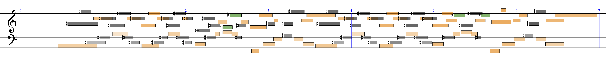・Correct transcription (original score) ( mp3 MIDI )
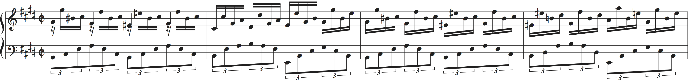Upper staff: mp3 MIDI
Lower staff: mp3 MIDI
・Result by merged-output HMM ( Upper staff: mp3 MIDI Lower staff: mp3 MIDI ) RCC = 7
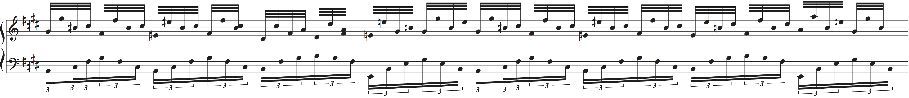・Result by note HMM ( mp3 MIDI ) RCC = 66
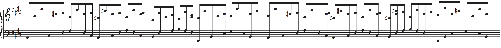・Result by metrical HMM ( mp3 MIDI ) RCC = 64
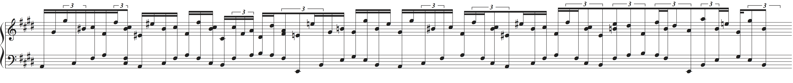Example 2 (Debussy: Arabesque No. 1)
・Input performance ( mp3 MIDI )
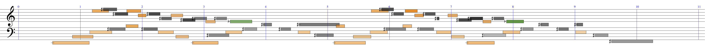・Correct transcription (original score) ( mp3 MIDI )

Upper staff: mp3 MIDI
Lower staff: mp3 MIDI
・Result by merged-output HMM ( Upper staff: mp3 MIDI Lower staff: mp3 MIDI ) RCC = 1
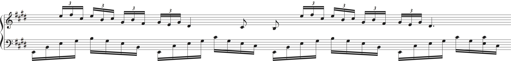・Result by note HMM ( mp3 MIDI ) RCC = 12
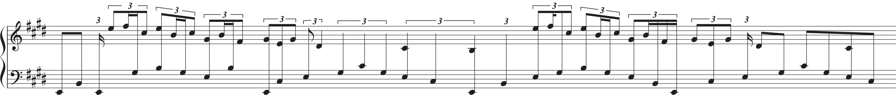・Result by metrical HMM ( mp3 MIDI ) RCC = 12
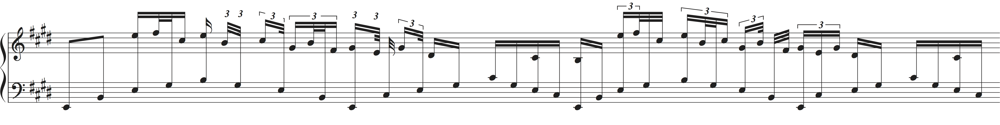Example 3 (Beethoven: 32 Variations, Var. 9)
・Input performance ( mp3 MIDI )
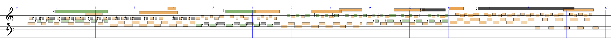・Correct transcription ( mp3 MIDI )
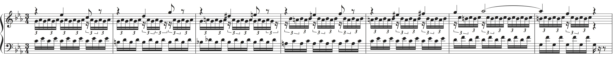Upper staff: mp3 MIDI
Lower staff: mp3 MIDI
・Result by merged-output HMM ( Upper staff: mp3 MIDI Lower staff: mp3 MIDI ) RCC = 7
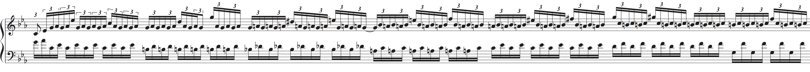・Result by note HMM ( mp3 MIDI ) RCC = 75
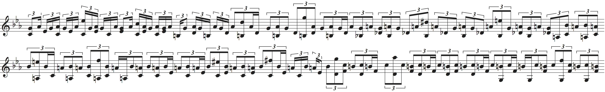・Result by metrical HMM ( mp3 MIDI ) RCC = 96
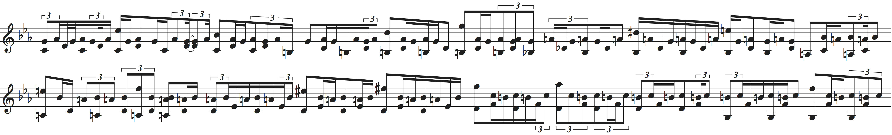Bad examples
Examples in which the merged-output HMM performed worse than the other HMMs.Example 4 (Bach: Two-part invention No. 1 C-dur)
・Input performance ( mp3 MIDI )
・Correct transcription (original score) ( mp3 MIDI )
Upper staff: mp3 MIDI
Lower staff: mp3 MIDI
・Result by merged-output HMM ( Upper staff: mp3 MIDI Lower staff: mp3 MIDI ) RCC = 2

・Result by note HMM ( mp3 MIDI ) RCC = 0

・Result by metrical HMM ( mp3 MIDI ) RCC = 0

Example 5 (Bach: The well tempered clavier book II No. 19 A-dur Fugue)
・Input performance ( mp3 MIDI )

・Correct transcription (original score) ( mp3 MIDI )
Upper staff: mp3 MIDI
Lower staff: mp3 MIDI
・Result by merged-output HMM ( Upper staff: mp3 MIDI Lower staff: mp3 MIDI ) RCC = 5
・Result by note HMM ( mp3 MIDI ) RCC = 2